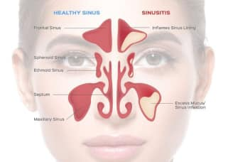

Заболевание, характеризующееся воспалительным процессом слизистой оболочки желудка. Различаются острая и хроническая формы заболевания.
Гайморит
Содержание статьи

Определение болезни
Устройство и значение носовых пазух
Гайморит — это воспалительный процесс в верхнечелюстных придаточных пазухах носа. Заболевание вызывает затруднение носового дыхания, проявляется выраженными болями в области переносицы, гнойными выделениями из носовых ходов, отеком век.
Согласно статистике, гайморитом болеет примерно каждый десятый житель развитых стран. Причем с проблемой сталкиваются и взрослые, и дети старше 6 лет. У малышей до 5 лет заболевание встречается крайне редко. Это объясняется физиологическим недоразвитием придаточных пазух.
Носовые пазухи расположены вокруг полости носа. Они соединены с носовыми ходами. Самые большие из них — гайморовы — локализуются в верхней челюсти. Немного поменьше — по двум сторонам спинки носа и в лобной кости. Остальные носовые пазухи (клиновидная, решетчатые ячейки) находятся сзади носовых костей. Они как бы вдаются внутрь черепной коробки. Гайморит — это воспаление именно гайморовых пазух.
Носовые пазухи выполняют важные функции:
- Они увлажняют и согревают воздух, вдыхаемый человеком. Обеспечивается это за счет специальной слизистой, покрытой небольшими ворсинками. Они выделяют влагу, делающую воздух комфортным для человека. Что касается нагрева, то он возможен из-за хорошего кровоснабжения слизистой, поддерживающего внутри синусов постоянную температуру воздуха.
- Задают тембр голоса.
- Классификация гайморита
Если Вы обнаружили у себя схожие симптомы, незамедлительно обратитесь к врачу. Легче предупредить болезнь, чем бороться с последствиями.
Гайморит бывает острым и хроническим. По типу воспалительного процесса острая форма заболевания классифицируется на:
- Катаральную (напоминает обычный насморк, может проявляться ощущением тяжести в области глаз и щек).
- Гнойную (в гайморовых пазухах накапливается гной, в результате боль становится очень сильной).
Хронический гайморит принято разделять на:
- Катаральный (проявляется периодическими обострениями в виде заложенности носа).
- Гнойный (из носа во время обострений, помимо слизи, выделяется гной).
- Кистозный (в пазухах образуются полости с жидкостью, превращающиеся в кисты).
- Полипозный (в гайморовых пазухах появляются и разрастаются полипы).
Если вовремя не начать лечение обострения гастрита, это приведет к развитию хронической формы заболевания и таким осложнениям, как желудочные кровотечения, язва желудка. Хронический гастрит, в свою очередь, приводит к раку желудка.
Если вовремя не начать лечение обострения гастрита, это приведет к развитию хронической формы заболевания и таким осложнениям, как желудочные кровотечения, язва желудка. Хронический гастрит, в свою очередь, приводит к раку желудка.
mosmed.ru/doctors
Cервис поиска врачей в Москве и Московской области
Признаки гайморита у взрослых и детей
Острый гайморит обычно начинается с насморка и повышения температуры тела. Больной жалуется на:
Он испытывает сильный дискомфорт в области лба, носа, щек. Иногда боль иррадиирует в виски. Дыхание становится затрудненным. Если воспалены пазухи с обеих сторон, больной вообще не может дышать носом — только открыв рот. Если закупорен слезный канал, текут слезы.
В самом начале болезни отделяемое из носа прозрачное и жидкое, но позже оно становится вязким, приобретает зеленоватый оттенок.
Симптоматика хронического гайморита несколько иная. В период ремиссии болезнь вообще никак себя не выдает. Но стоит пациенту переохладиться или простыть, как возникают:
- давящие головные боли («за глазами»);
- тошнота;
- затрудненное дыхание;
- насморк;
- незначительное повышение температуры;
- кашель в ночное время суток.
Информация предоставленная на сайте, не может быть использована для постановки диагноза, назначения лечения и не заменяет врача.
Источники
- Гастроэнтерология. Национальное руководство: краткое издание / Под ред. В. Т. Ивашкина, Т. Л. Лапиной. — М.: ГЭОТАР-Медиа, 2015. — 480 с.
- Каганов Б. С., Шарафетдинов Х. Х. Лечебные столы по М. И. Певзнеру // Вопросы диетологии. — 2015. — № 2. — С. 68-70.
- Куликов Ю. А., Щербаков В. М. Основные положения, понятия и методики в патологии. — 2011. — С 112.
- Леонов В. В., Донцов И. В., Мехтиханов З. С., Бойко Л. А. Руководство по эндоскопии пищевода, желудка и двенадцатиперстной кишки. — Харьков: Факт, 2004. — 136 с.
- Рапопорт С. И. Гастриты: пособие для врачей. — М.: Медпрактика, 2010. — 20 с.
- Руководство по внутренней медицине / Под ред. Г. П. Арутюнова, А. И. Мартынова, А. А. Спасского. — М.: ГЭОТАР-медиа, 2015. — 800 с.
- Федеральная служба государственной статистики. Здравоохранение в России. 2015: статический сборник. — М., 2015. — 174 с.
- Форбс А., Мисиевич Дж. Дж., Комптон К. К., Левин М. С. И др. Атлас клинической гастроэнтерологии / пер. с англ. — М.: Рид Элсивер, 2010. — 392 с.
- Циммерман Я. С. Гастроэнтерология: руководство. — 2-е изд., перераб. и доп. — М.: ГЭОТАР-Медиа, 2015. — 816 с.
- Чернеховская Н. Е., Андреев В. Г., Черепянцев Д. П., Поваляев А. В. Эндоскопическая диагностика заболеваний пищевода, желудка и тонкой кишки. — М.: МЕДпресс-информ, 2010. — 208 с.
- Azer S. A., Akhondi H. Gastritis // StatPearls Publishing. — 2020. Ссылка
- Chun H. J., Yang SK., Choi MG. Therapeutic Gastrointestinal Endoscopy. — 2019.
- Megha R., Farooq U., Lopez P. P. Stress-Induced Gastritis // StatPearls Publishing. — 2020. Ссылка
Гастрит
Гематома
Cостояние, характеризующееся скоплением жидкой или свернувшейся крови внутри тела, которое возникает в результате разрыва сосудов и локализуется в мягких тканях.
Другие заболевания ЛОР специализации
Врачи, лечащие гайморит

- Врач высшей категории
- Кандидат медицинских наук
- Cтаж 24 лет

- Врач высшей категории
- Кандидат медицинских наук
- Cтаж 24 лет

- Кандидат медицинских наук
- Cтаж 24 лет
- Cтаж 24 лет

- Врач высшей категории
- Кандидат медицинских наук
- Cтаж 24 лет
- Кандидат медицинских наук
- Cтаж 24 лет
- Врач высшей категории
- Кандидат медицинских наук
- Cтаж 24 лет
Комментарии68
ВА
Василиса Андреева
 14.02.2022
14.02.2022
Комментарий
Замечательный и очень чуткий врач! Мне очень повезло, что в один момент в Перинатальном центре моим врачом стала именно Дарья Дмитриевна. Она приходила к беременным в отделение патологии на любой писк, всегда тщательно осматривала, замечательно общалась. Дарья Дмитриевна прекрасный специалист и очень приятный человек, если бы я знала в начале беременности, что она ведёт с самого начала, то пошла бы только к ней.
АС
Алексей Самойлов
15.02.2022
Комментарий
Давно знаю доктора Д.Д.Манохину, обращаюсь только к ней! Всегда внимательна, ничего лишнего не назначит и тщательно разбирается в проблеме пациента!
МА
Марк Антонов
17.02.2022
Комментарий
Манохина Дарья Дмитриевна - очень грамотный доктор. Это единственный гинеколог - к которому "хочется идти" :) Я обратилась к доктору по многочисленным рекомендациям знакомых. Доктор всё объяснила на понятном мне языке. Полностью выслушала, и дала много полезных советов по моей проблеме. Огромное ей спасибо!
МА
Марк Антонов
12.02.2022
Комментарий
Манохина Дарья Дмитриевна - очень грамотный доктор. Это единственный гинеколог - к которому "хочется идти" :) Я обратилась к доктору по многочисленным рекомендациям знакомых. Доктор всё объяснила на понятном мне языке. Полностью выслушала, и дала много полезных советов по моей проблеме. Огромное ей спасибо!
МА
Марк Антонов
17.02.2022
Комментарий
Манохина Дарья Дмитриевна - очень грамотный доктор. Это единственный гинеколог - к которому "хочется идти" :) Я обратилась к доктору по многочисленным рекомендациям знакомых. Доктор всё объяснила на понятном мне языке. Полностью выслушала, и дала много полезных советов по моей проблеме. Огромное ей спасибо!
МА
Марк Антонов
17.02.2022
Комментарий
Манохина Дарья Дмитриевна - очень грамотный доктор. Это единственный гинеколог - к которому "хочется идти" :) Я обратилась к доктору по многочисленным рекомендациям знакомых. Доктор всё объяснила на понятном мне языке. Полностью выслушала, и дала много полезных советов по моей проблеме. Огромное ей спасибо!
АС
Арминэ Сатурян
25.02.2022
Комментарий
Прекрасный врач! Попала к ней с угрозой для жизни ребёнка! Прекрасно провела осмотр, очень добрая внимательная и отзывчивая! По факту рассказала и объяснила все моменты угрозы, в результате назначила лечение, которое было продуктивно, выписали меня очень быстро! Очень рада, что попала именно к этому врачу! С такими специалистами не страшно лежать в больнице!
Подберем хорошего и недорогого врача в удобном для вас районе за 1 минуту
4.53


Услуга бесплатная